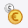
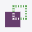
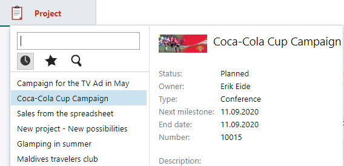

The Navigator
You move between the main sections of SuperOffice CRM and Service using the Navigator on the far left of the main screen.
Tip
You can change the width of the navigator by clicking  and above the navigator.
and above the navigator.
The navigator in Standard CRM
| Button | Description | Read more |
|---|---|---|
| Opens the Dashboard screen, containing reports and charts of your SuperOffice data. | Dashboard | |
| Opens the Company screen, which is your window to the database containing all the companies you are in contact with. | Companies | |
| Opens the Contact screen, which is your window to the database containing all your contacts. | Contact | |
| Opens the Diary screen, which is a kind of advanced filofax. | Diary | |
|  | Opens the Sale screen, containing information about all the sales. | Sale |
| Opens the Project screen, containing information about different projects. | Project | |
|  | Opens the Selection screen, where you can enter companies, contacts, projects, sales, documents and follow-ups that you work with frequently into separate selections. Selections can, among other things, be used for mailings. | Selection |
| Opens your inbox, where you can read and reply to incoming messages. | Inbox/Email | |
| Opens the Chat screen, where you can respond to inquiries sent via the chat feature on you company's web page. | Chat | |
| Opens the Reports screen. In this report generator you will find a set of standard reports which you can use to print reports based on data from SuperOffice CRM. | Reports | |
| Opens the Marketing screen. From here you can create and send mailings (emails, SMS and documents) and create and publish forms. | Marketing | |
| Opens Service, a web-based system for handling customer requests. This application requires a Service User license. | SuperOffice Service | |
| Opens a menu that gives you access to external applications and websites. The items available to you are defined in SuperOffice Settings and maintenance. |
The navigator in Service
| Button | Description | Read more |
|---|---|---|
| Dashboard: The dashboard provides you with an overview that can be tailored to your needs. | Dashboard | |
| Requests: This is where you manage requests and enquiries that are in the system. You can also create internal and external requests, respond to incoming enquiries and obtain an overview of the statuses of all requests in the system. | Requests | |
| Customers: Here you can search for and create companies and contacts. | Customers | |
| Selections: You use selections to save a set of records, such as a set of requests or contacts that you want to work with later on and elsewhere in the system. | Selections | |
| Knowledge Base: The knowledge base gives request handlers access to saved data in a single location, which makes it easier to acquire and organise information for the customer. Among other things, it contains FAQs and reply templates. Knowledge Base | ||
| Statistics: Here you can run standard reports and create new reports. | Statistics | |
| Marketing: From here you can create and send mailings (emails, SMS and documents) and create and publish forms. | Mailing | |
| Chat: Opens the Chat screen, where you can respond to inquiries sent via the chat function on you company's web page. | Chat |
The Navigator in Settings and maintenance
| Button | Function | Read more |
|---|---|---|
| Licences: On the SuperOffice tab you can download new licence information for your version of SuperOffice CRM and associated modules. On the Status tab you can view database information and system notifications. | Licenses | |
| Users: opens the Users screen, where you can define IDs, passwords, user groups, roles and various access options. On the Our companies tab you can add companies in addition to your main company. | Status | |
| Roles: opens the Roles screen, where you can define roles for accessing data and functions in SuperOffice CRM. The users' access levels are determined by the role they belong to. | Roles | |
| Privacy: opens the Privacy screen, where you can define settings for privacy and consent in SuperOffice CRM. | Privacy | |
| SAINT: opens the screen for status monitors (Sales Intelligence), where you can create statuses for companies and projects. | SAINT | |
| AI services: opens the screen for AI services, where you can configure settings for text analysis, sentiment analysis and categorization of requests. | AI services | |
| Lists: opens the Lists screen, containing descriptions and definitions of the lists in SuperOffice CRM. | Lists | |
| Quote/Sync: opens the Quote/Sync screen, where you can administrate connections and settings for ERP systems that are linked to SuperOffice CRM. Here you can also work on the price lists and products in the SuperOffice database. | Quote/Sync | |
| Workflow: opens the Workflow screen, where you can define sales guides and project guides for SuperOffice CRM. | Workflow | |
| Screen designer: opens the Screen designer screen, where you can create custom screen layouts for specific user groups. | Screen designer | |
| Preferences: opens the Preferences screen, where you can specify a number of settings for different aspects of SuperOffice CRM, for example, the number of elements to display in the history list, the default type for new activities, and so on. Here you can also configure Video meetings and the Document library. | Preferences | |
| Chat: opens the Chat screen, where you can create chat channels and set up the chat feature. | Chat | |
| Options: opens the Options screen, where you can define system-wide settings, i.e. settings for freetext search, time zones, number allocation, labels and reports. | [Options]]26 | |
| Import: opens the Import screen, where you can import data into the SuperOffice database. | Import | |
| Fields: opens the Fields screen, where you define user-defined fields for SuperOffice CRM. | Fields | |
| CRMScript: opens the screen with various functions for scripting and automation, such as macros, event handlers and scheduled tasks. | CRMScript | |
| Requests: here you can find various settings for requests in SuperOffice Service. | Requests | |
| Customer centre: here you can configure the customer centre. You can edit the content and layout of the customer centre and edit the default content. | ||
| System design: here you can find various advanced settings for SuperOffice Service. | ||
| App Store: Click here to open the SuperOffice App Store, where you can explore standard apps, modules and integrations that can expand SuperOffice CRM Online. |
Navigator options
When you click a navigator button, one or more of the buttons below are displayed.
| Button | Description |
|---|---|
| Actions/lists: Click this button to show available actions/functions, lists and similar for the selected navigator button. | |
| History: Click this button to show recently opened records, for instance request, contacts or selections. | |
| Favorites: Click this button to view the records you have set as favorites. | |
| Search: Click this button to show the results of the least search. The search field above the buttons is dynamic, so you only need to start typing your search phrase to initiate the search. |
Note
Clicking the Dashboard button only opens the dashboard.
If you hold the mouse pointer over a record in any the lists, a tooltip is displayed containing additional data about the record.
Sales:

Service: